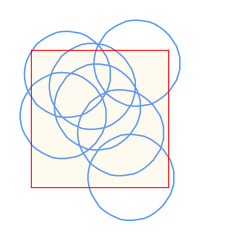
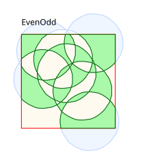
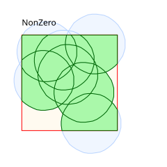
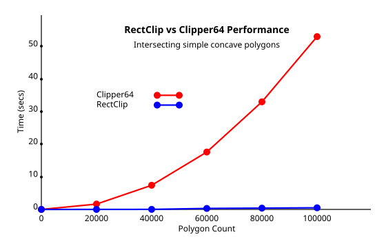
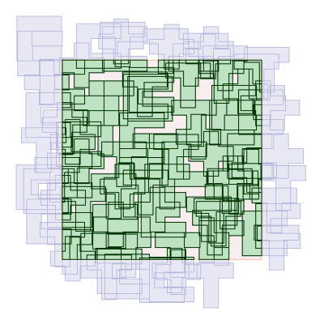

Delphifunction RectClip64(const rect: TRect64; const subjects: TPaths64): TPathsD;
Delphifunction RectClipD(const rect: TRectD; const subjects: TPathsD): TPathsD;
C++Paths64 RectClip64(const Rect64 rect, const Paths64& subjects);
C++PathsD RectClipD(const RectD rect, const PathsD& subjects);
C# public static Paths64 RectClip64(Rect64 rect, Paths64 subjects);
C# public static PathsD RectClipD(RectD rect, PathsD subjects);
As RectClip's name implies, clipping regions must be rectangular. And since these functions use a completely different clipping algorithm from the library's general purpose polygon clipper, they behave in a number of different ways too.
First, these functions are extremely fast when compared to the general purpose clipper (see below). However, RectClip only performs intersect clipping, not union or difference clipping. Subject polygons will only be clipped with the clipping boundary, so individual polygons will be unaffected by other polygons. And because RectClip preserves path orientation (winding direction), it is completely agnostic to filling rules. So whatever filling rule applies to the subject polygons will also apply to the solution.
1. RectClip is agnostic to filling rules:



2. Performance:
RectClip is extremely fast when compared to the Library's general purpose clipper. Where the general purpose Intersect function has roughly O(n³) performance, RectClip has O(n) performance.


#include "clipper2/clipper.h"
using namespace Clipper2Lib;
// create 3 very simple shapes - plus, T and C
Paths64 shapes = {
MakePath({ 20,20, 20,0, 40,0, 40,20, 60,20,
60,40, 40,40, 40,60, 20,60, 20,40, 0,40, 0,20 }),
MakePath({ 20,60, 20,20, 0,20, 0,0, 60,0,
60,20, 40,20, 40,60 }),
MakePath({ 0,0, 60,0, 60,20, 20,20, 20,40,
60,40, 60,60, 0,60 }) };
// create multiple paths at random positions using the above shapes
const int shape_cnt = 100;
const int width = 400, height = 400, margin = width / 6;
Rect64 rect = Rect64(margin, margin, width - margin, height - margin);
Paths64 subject;
srand(time(NULL));
subject.reserve(shape_cnt);
int w = (width - 60), h = (height - 60);
for (int i = 0; i < shape_cnt; ++i)
subject.push_back(TranslatePath(
shapes[rand() % 3], rand() % w, rand() % h) );
// intersect the subject paths with the rectangle
Paths64 solution = RectClip(rect, subject);
Intersect, RectClipLines, Paths64, PathsD, Rect64, RectD
Copyright © 2010-2024 Angus Johnson - Clipper2 1.5.2 - Help file built on 3 Mar 2025